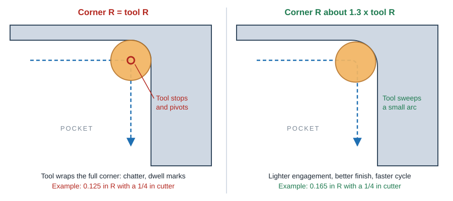
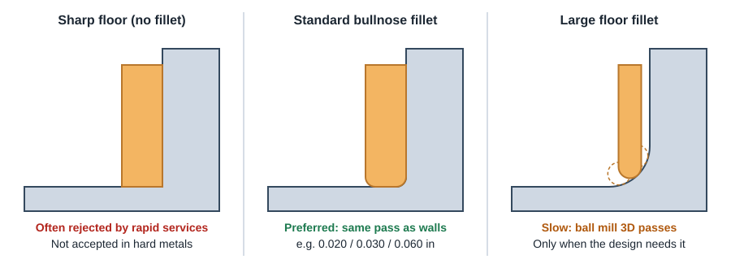
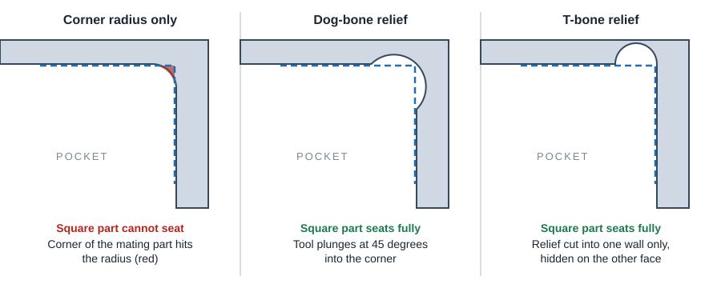
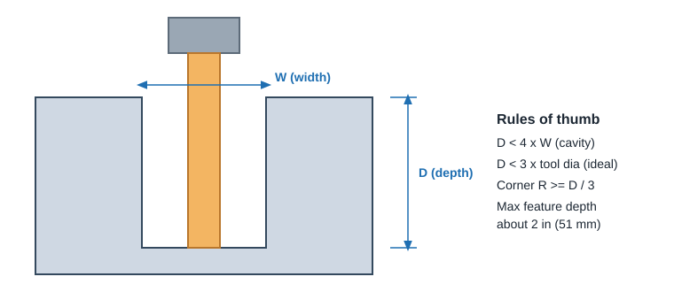
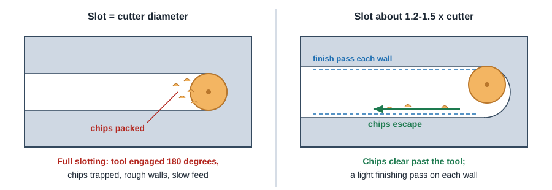

CNC Machining
Inside Corners & Pockets
A spinning round cutter cannot make a sharp inside corner. Size corner radii a little larger than a standard cutter, give every pocket floor a small standard bullnose fillet, and keep pockets shallow relative to their width.
Inside vertical corner radius

Make the inside corner radius about 1.3 x the radius of the cutter you expect, and never exactly equal to a standard cutter radius. For a 1/4 in (6 mm) cutter, design about 0.165 in (4 mm) radius, not 0.125 in (3 mm).
- Why not equal? With zero clearance the cutter is fully wrapped in material at the corner. Load spikes, the tool chatters and dwell marks are left on the walls. The machinist must slow down or drop to a smaller tool.
- Bigger is cheaper. A larger radius allows a larger, stiffer cutter that removes more material per pass. Aim for a corner radius of at least one third of the pocket depth.
- Use one radius for every inside corner on the part so a single tool finishes all of them with no tool changes.
- Minimum practical: keep radii above 1/32 in (0.8 mm). Smaller tools exist but are short, slow and fragile.
- Small tools are depth limited. A 1/32 in end mill reaches only about 5x its diameter (roughly 0.15 in). Deep pockets need big corners.
Quick pick table
| Cutter | Tool radius | Minimum corner R (tool R + 0.005 in) | Recommended corner R (1.3x) | Comfortable pocket depth (soft metal, 3x D) |
|---|---|---|---|---|
| 1/16 in | 0.031 | 0.036 | 0.045 | 0.19 in |
| 1/8 in | 0.063 | 0.068 | 0.085 | 0.38 in |
| 3/16 in | 0.094 | 0.099 | 0.130 * | 0.56 in |
| 1/4 in | 0.125 | 0.130 | 0.165 | 0.75 in |
| 3/8 in | 0.188 | 0.193 | 0.245 | 1.13 in |
| 1/2 in | 0.250 | 0.255 | 0.325 | 1.50 in |
| 3 mm | 1.5 mm | 1.6 mm | 2.1 mm * | 9 mm |
| 6 mm | 3.0 mm | 3.1 mm | 3.9 mm | 18 mm |
| 10 mm | 5.0 mm | 5.1 mm | 6.5 mm | 30 mm |
| 12 mm | 6.0 mm | 6.1 mm | 7.8 mm | 36 mm |
Inch values in inches. Recommended radii rounded up to 0.005 in / 0.1 mm. * Bumped one step: 1.3 x would land exactly on the radius of the next standard cutter (0.125 in = 1/4 in cutter, 2.0 mm = 4 mm cutter), which is the radius to avoid. Hard metals (steel, stainless, titanium): plan on about 2x D comfortable depth instead of 3x D.
Corner & floor radius picker
Enter your pocket depth and the corner radius you were planning. The picker shows which standard cutters fit, flags radii that match a cutter exactly, and suggests floor fillets. The same tool is on the Calculators page.
Floor fillets

- Default to a floor fillet. Most automated and rapid prototyping services cut pockets with bullnose (corner radius) cutters and no longer accept sharp floor-to-wall edges in hard metals (steel, stainless, titanium). In soft metals sharp floors are case by case and are often rejected or re-quoted. Only plastics reliably accept a sharp floor, and a bullnose radius is still preferred.
- Use a standard bullnose radius that the wall cutter offers: for example 0.030 in on a 1/4 in cutter, 0.015 in on a 1/8 in cutter, 0.5 mm on a 6 mm cutter, 1.0 mm on a 10 mm cutter. The cutter's corner radius becomes the fillet, so walls and floor are cut in one pass. The picker suggests one automatically.
- Keep the floor fillet smaller than the wall corner radius, so the same cutter finishes the wall corner and the floor fillet in one smooth motion.
- Large floor fillets (anything bigger than a standard bullnose radius) are cut with a ball end mill in many 3D passes. Avoid unless the function needs it.
Corner reliefs for square mating parts

- Dog-bone: a round relief at 45° into the corner. Easy to model and cut, but visible from both walls.
- T-bone: the relief runs into one wall only. Use it when one wall is cosmetic or sealing.
- A 1/4 in (6 mm) relief allows functionally sharp corners far deeper (around 1.25 in in steel, about double that in aluminum or plastic) than a tiny radius cutter ever could.
- Size the relief to a standard cutter diameter plus a little clearance, the same as any slot.
- Often the cheaper fix is on the mating part: add a chamfer or radius to its outside corners so it clears the pocket radius.
Pocket depth and width

| Guideline | Value | Why |
|---|---|---|
| Cavity depth vs width | Depth < 4 x width (more than 6x is considered too deep) | Tool reach, deflection and chip evacuation |
| Depth vs cutter diameter (D) | Soft metals and plastics: up to 3 x D standard and fast; 3 to 4 x D slower finish pass; 4 to 6 x D long-reach tool. Hard metals: 2 x D, 3 x D and 5 x D for the same bands | Same bands the picker uses; tool deflection and chatter grow with reach |
| Corner radius vs depth | R ≥ depth / 3 | Lets a cutter big enough for the depth fit the corner |
| Maximum feature depth | About 2 in (51 mm) with standard tooling | Longest common stiff cutters |
| Deep pockets | Make them wider at the top, or step the walls | Lets a shorter, larger tool reach the floor |
Pockets added only to save weight often cost more in machine time than the material they save. Fewer, larger pockets with big corner radii are far cheaper than many small ones that need six to eight different cutters.
Holes and slots cut with an end mill
Holes that are not a standard drill size, and all slots, are cut by an end mill moving around the feature. The cutter needs room for chips to escape.
- Make an end-milled hole or closed slot noticeably larger than a standard cutter, roughly 1.2x to 1.5x the cutter diameter, so chips can clear. A slot exactly one cutter wide forces full-width cutting with no room for chips.
- If you need a precise hole size, design it to a standard drill or reamer size instead. See Tap & Clearance Drill Charts and Hole & Thread Design Rules.
- Keep slot depth under about 6x the slot width.

Xometry CNC Machining Design Guide (1.3x radius rule, depth ratios) · ProtoLabs "15 Design Tips to Reduce the Cost of CNC Machining" (R ≥ 1/3 depth, same radius on all corners) · ProtoLabs: 6 ways to optimize part design (corner reliefs).